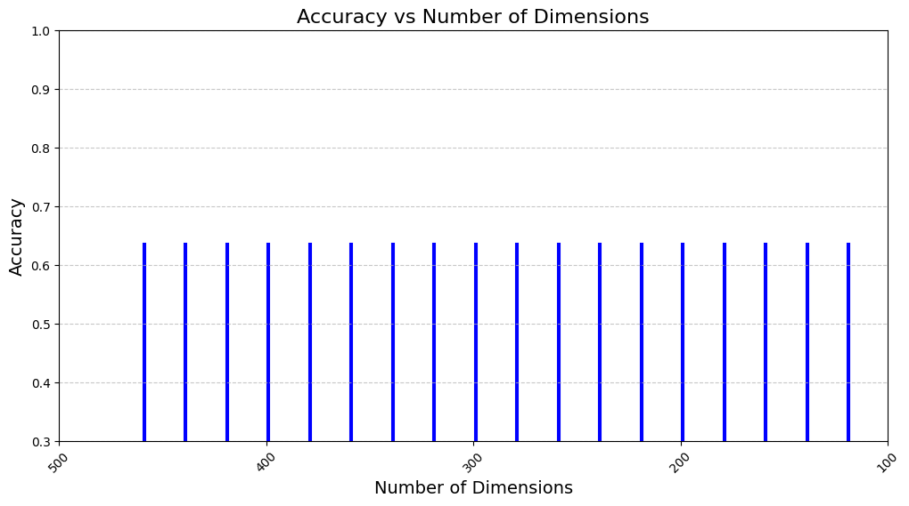

#Pengurangan Dimensi Bertahap Pada Dokumen
!pip install Sastrawi pandas
Collecting Sastrawi
Downloading Sastrawi-1.0.1-py2.py3-none-any.whl.metadata (909 bytes)
Requirement already satisfied: pandas in /usr/local/lib/python3.10/dist-packages (2.2.2)
Requirement already satisfied: numpy>=1.22.4 in /usr/local/lib/python3.10/dist-packages (from pandas) (1.26.4)
Requirement already satisfied: python-dateutil>=2.8.2 in /usr/local/lib/python3.10/dist-packages (from pandas) (2.8.2)
Requirement already satisfied: pytz>=2020.1 in /usr/local/lib/python3.10/dist-packages (from pandas) (2024.2)
Requirement already satisfied: tzdata>=2022.7 in /usr/local/lib/python3.10/dist-packages (from pandas) (2024.2)
Requirement already satisfied: six>=1.5 in /usr/local/lib/python3.10/dist-packages (from python-dateutil>=2.8.2->pandas) (1.17.0)
Downloading Sastrawi-1.0.1-py2.py3-none-any.whl (209 kB)
?25l ━━━━━━━━━━━━━━━━━━━━━━━━━━━━━━━━━━━━━━━━ 0.0/209.7 kB ? eta -:--:--
━━━━━━━━━━━━━━━━━━━━━━━━━━━━━━━━━━━━━━━╺ 204.8/209.7 kB 6.3 MB/s eta 0:00:01
━━━━━━━━━━━━━━━━━━━━━━━━━━━━━━━━━━━━━━━━ 209.7/209.7 kB 5.0 MB/s eta 0:00:00
?25h
Installing collected packages: Sastrawi
Successfully installed Sastrawi-1.0.1
import pandas as pd
import re
import pickle
import nltk
import numpy as np
import seaborn as sns
import matplotlib.pyplot as plt
nltk.download('stopwords')
nltk.download('wordnet')
nltk.download('punkt')
from tqdm import tqdm
from nltk.corpus import stopwords
from Sastrawi.Stemmer.StemmerFactory import StemmerFactory
from sklearn.decomposition import TruncatedSVD
from sklearn import preprocessing
from sklearn.feature_extraction.text import CountVectorizer
from sklearn.feature_extraction.text import TfidfVectorizer
from sklearn.linear_model import LogisticRegression
from sklearn.metrics import classification_report, confusion_matrix
from sklearn.metrics.pairwise import cosine_similarity
from sklearn.model_selection import train_test_split
from sklearn.metrics import accuracy_score
[nltk_data] Downloading package stopwords to /root/nltk_data...
[nltk_data] Unzipping corpora/stopwords.zip.
[nltk_data] Downloading package wordnet to /root/nltk_data...
[nltk_data] Downloading package punkt to /root/nltk_data...
[nltk_data] Unzipping tokenizers/punkt.zip.
data = pd.read_csv('hasil_crowling.csv')
data
| Judul | Tanggal | Ringkasan | Kategori | |
|---|---|---|---|---|
| 0 | Mary Jane dan 5 Terpidana Mati Bali Nine Dipul... | 19 Des 2024 00:01 | Hingga saat ini baik Filipina dan Australia be... | Rajut |
| 1 | Antisipasi Bencana, Kantor SAR Jakarta Gelar L... | 18 Des 2024 21:30 | 120 personel gabungan mengikuti Latihan Gabung... | Peristiwa |
| 2 | Kejati Jakarta Geledah Kantor Dinas Kebudayaan... | 18 Des 2024 21:25 | Kejaksaan Tinggi Jakarta menggeledah sejumlah ... | Peristiwa |
| 3 | Pulang Main Bilyard, Pria di Tangerang Kota Di... | 18 Des 2024 21:00 | Seorang pria dikeroyok usai bermain bilyard di... | Peristiwa |
| 4 | Kejati Jakarta Geledah Kantor Dinas Kebudayaan... | 18 Des 2024 20:41 | Syahron mengatakan, Kejati DK Jakarta mulai me... | Peristiwa |
| 5 | Bentrok Warga dengan Pekerja di Tanah Abang Ja... | 18 Des 2024 20:35 | Satu orang tewas diduga akibat bentrokan yang ... | Peristiwa |
| 6 | Pemkab Tangerang Gelar Seleksi Definitif Sekre... | 18 Des 2024 20:21 | Kepala BKPSDM Kabupaten Tangerang, Hendar Hera... | Megapolitan |
| 7 | Polisi Berjaga di Lokasi Keributan di Jakpus, ... | 18 Des 2024 20:16 | Satu orang meninggal dunia akibat bentrokan an... | Peristiwa |
| 8 | Viral! Aksi Heroik Wanita di Jakut, Terseret S... | 18 Des 2024 20:07 | Kapolsek Cilincing, Kompol Fernando Saharta Sa... | Peristiwa |
| 9 | Gegara Tanya Utang Piutang, Berujung Penganiay... | 18 Des 2024 20:00 | Keributan terjadi di Pasar Tebet Barat, Jakart... | Peristiwa |
| 10 | Amankan Natal dan Tahun Baru, 141.605 Personel... | 18 Des 2024 19:54 | Operasi Lilin 2024 tidak hanya berfokus pada k... | Peristiwa |
| 11 | OJK Pertahankan Predikat Badan Publik Informat... | 18 Des 2024 19:45 | Otoritas Jasa Keuangan (OJK) meraih predikat b... | Peristiwa |
| 12 | Wakil Ketua Komisi X: Fasilitas dan Minim Guru... | 18 Des 2024 19:38 | Politikus PKB itu menekankan pentingnya integr... | Peristiwa |
| 13 | Bacakan Pleidoi, Pesan Harvey Moeis ke Anaknya... | 18 Des 2024 19:27 | Dalam pleidoinya, Harvey Moeis juga meminta ma... | Peristiwa |
| 14 | PKB Ingatkan Pemerintah Jamin Kelancaran dan I... | 18 Des 2024 19:18 | Menurut dia, fokus utama pemerintah dalam peri... | Politik |
| 15 | Temui Presiden Mesir, Prabowo Disambut Upacara... | 18 Des 2024 19:00 | Kedua pimpinan negara bersalaman dan kemudian ... | Peristiwa |
| 16 | Diperiksa KPK Selama 7 Jam, Yasonna Laoly Dice... | 18 Des 2024 18:49 | Yasonna Laoly diperiksa KPK dalam kapasitasnya... | Peristiwa |
| 17 | Kasus Harun Masiku, Yasonna: Saya Diperiksa Se... | 18 Des 2024 18:38 | Yasonna Laoly menjelaskan, dalam pada saat Pem... | Peristiwa |
| 18 | Pembangunan Tanggul Pantai di Jakarta Molor, T... | 18 Des 2024 18:36 | Pelaksana tugas (Plt) Kepala Dinas Sumber Daya... | Megapolitan |
| 19 | Tatap 2025, Program Tekad Dukung BUMDes Perku... | 18 Des 2024 18:28 | Fokus utama Program TEKAD adalah melatih BUMDe... | Peristiwa |
| 20 | NasDem: Kajian Pilkada Dikembalikan ke DPRD Ha... | 18 Des 2024 18:22 | Selain kajian mendalam, NasDem juga mendorong ... | Politik |
| 21 | Komnas HAM Ungkap Potret Situasi Papua Sepanja... | 18 Des 2024 18:03 | Dampak dari konflik bersenjata dan kekerasan m... | Peristiwa |
| 22 | Pengakuan Harvey Moeis, Tidak Pernah Punya dan... | 18 Des 2024 18:00 | Terdakwa Harvey Moeis mengaku dirinya, keluarg... | Peristiwa |
| 23 | Pemulangan ke Filipina Diapresiasi, Komnas HAM... | 18 Des 2024 17:44 | Anis menyayangkqn, kasus TPPO terhadap Mary Ja... | Peristiwa |
| 24 | Pakai Samurai, Kawanan Begal Beraksi di Cengka... | 18 Des 2024 17:35 | Insiden itu dialami seorang laki-laki berinisi... | Peristiwa |
| 25 | Raih Penghargaan KIP, Gerindra Komitmen Berant... | 18 Des 2024 17:29 | Penghargaan ini dapat menjadi bukti bahwa komi... | Peristiwa |
| 26 | 5 Pernyataan Terpidana Mati Kasus Narkoba Mary... | 18 Des 2024 17:15 | Terpidana mati kasus penyelundupan narkoba Mar... | Peristiwa |
| 27 | Harvey Moeis Baca Pleidoi, Sebut Sang Istri Sa... | 18 Des 2024 17:07 | Harvey Moeis mengatakan, Sandra Dewi telah dif... | Peristiwa |
| 28 | BPBD Jakarta Siapkan Skema Evakuasi Antisipasi... | 18 Des 2024 17:00 | Badan Penanggulangan Bencana Daerah (BPDB) Jak... | Peristiwa |
| 29 | Komnas HAM: PSN Pangan Presiden Prabowo di Mer... | 18 Des 2024 16:44 | Aduan itu dikarenakan proses perencanaan pemba... | Peristiwa |
| 30 | Pramono Anung Sedang Bentuk Tim Transisi Pemer... | 18 Des 2024 16:25 | Gubernur terpilih Jakarta Periode 2024-2029 Pr... | Politik |
| 31 | Komitmen Transparansi, Kemendagri Raih Penghar... | 18 Des 2024 16:18 | Berdasarkan hasil monitoring dan evaluasi (mon... | News |
| 32 | Projo Tunggu Perintah Jokowi, Siap Berubah Jad... | 18 Des 2024 16:16 | Handoko mengatakan pintu Projo akan selalu ter... | Politik |
| 33 | Cuaca Ekstrem, Pemprov Jakarta Pastikan Distri... | 18 Des 2024 16:01 | Pelaksana tugas (Plt) Asisten Kesejahteraan Ra... | Megapolitan |
| 34 | Sidang Kasus Dugaan Korupsi Timah, Terdakwa Su... | 18 Des 2024 16:00 | Dalam sidang dengan agenda pembelaan (pledoi) ... | Peristiwa |
| 35 | Fraksi PKB Dukung Usulan Kepala Daerah Dipilih... | 18 Des 2024 15:48 | Menurut anggota Fraksi PKB, wacana kepala daer... | Politik |
| 36 | Transjakarta Akan Tambah Jam Layanan di Malam ... | 18 Des 2024 15:41 | PT Transportasi Jakarta (Transjakarta) berenca... | Peristiwa |
| 37 | Muktamar PPP Digelar April-Mei 2025, DPP Sebut... | 18 Des 2024 15:41 | Dalam Mukernas II PPP tidak ada satu pun perwa... | Politik |
| 38 | Mendagri Tito: Ada Anggaran Stunting Rp10 Mili... | 18 Des 2024 15:14 | Jangan sampai, kata dia, para kepala daerah ju... | Peristiwa |
| 39 | KI Pusat Bakal Laporkan 160 BP Kurang dan Tida... | 18 Des 2024 15:00 | Donny Yoesgiantoro tetap memberikan apresiasi ... | Peristiwa |
| 40 | Polisi Pastikan Tak Beri Perlakuan Khusus terh... | 18 Des 2024 14:47 | Meskipun belakangan beredar kabar soal George ... | Peristiwa |
| 41 | PKS Siap Dukung Kepemimpinan Gubernur Pramono ... | 18 Des 2024 14:20 | Khoirudin memastikan Partai Keadilan Sejahtera... | Politik |
| 42 | Ribuan Banser Depok Bersiaga Amankan Natal dan... | 18 Des 2024 14:06 | Nantinya, Banser Depok siap membantu pengamana... | Peristiwa |
| 43 | Anindya Bakrie: Malam Renungan Natal Kadin Ind... | 18 Des 2024 14:05 | Ketum Kadin Indonesia Anindya Bakrie menyampai... | Peristiwa |
| 44 | Menag Sebut Terowongan Silaturahim Istiqlal-Ka... | 18 Des 2024 14:02 | Menag mengatakan, Terowongan Silaturahim memil... | Peristiwa |
| 45 | Kemenkop-KemenP2MI Hadirkan Koperasi untuk Pek... | 18 Des 2024 14:00 | Kementerian Koperasi bersama dengan Kementeria... | Peristiwa |
| 46 | Mendagri Tito Sebut Hampir Separuh BUMD Merugi... | 18 Des 2024 13:49 | Tito menjelaskan, kerugian tersebut tidak hany... | Peristiwa |
| 47 | Brando DPRD Jakarta Sambut Positif Penyaluran ... | 18 Des 2024 13:39 | Anggota DPRD Jakarta Brando Susanto mengatakan... | Megapolitan |
| 48 | Curanmor Tewas Diduga Dikeroyok Massa di Taman... | 18 Des 2024 13:36 | Pria yang belum diketahui identitas kepergok s... | Peristiwa |
| 49 | DPR Ingatkan Pemerintah Antisipasi Lonjakan Pe... | 18 Des 2024 13:22 | Kepadatan lalu lintas tidak bisa dihindari set... | Peristiwa |
| 50 | 6 Fakta Terkait Kunjungan Prabowo ke Mesir, Ha... | 18 Des 2024 13:10 | Prabowo dijadwalkan akan menghadiri Konferensi... | Peristiwa |
| 51 | Gerindra Kembali Raih Penghargaan Keterbukaan ... | 18 Des 2024 13:02 | Gerindra menerima penghargaan dengan predikat ... | Peristiwa |
| 52 | Ketum Kadin Indonesia Anindya Bakrie Lakukan D... | 18 Des 2024 13:00 | Ketum Kadin Indonesia Anindya Bakrie berkesemp... | Peristiwa |
| 53 | KPK: Risiko Korupsi di Instansi Negara Berada ... | 18 Des 2024 12:55 | Johanis Tanak menyampaikan, salah satu misi le... | Peristiwa |
| 54 | Perkuat Rehabilitasi Mangrove, M4CR Kumpulkan ... | 18 Des 2024 12:43 | Program Mangrove for Coastal Resilience (M4CR)... | Peristiwa |
df_acak = data.sample(frac=1).reset_index(drop=True)
df_acak
| Judul | Tanggal | Ringkasan | Kategori | |
|---|---|---|---|---|
| 0 | 5 Pernyataan Terpidana Mati Kasus Narkoba Mary... | 18 Des 2024 17:15 | Terpidana mati kasus penyelundupan narkoba Mar... | Peristiwa |
| 1 | Pembangunan Tanggul Pantai di Jakarta Molor, T... | 18 Des 2024 18:36 | Pelaksana tugas (Plt) Kepala Dinas Sumber Daya... | Megapolitan |
| 2 | Fraksi PKB Dukung Usulan Kepala Daerah Dipilih... | 18 Des 2024 15:48 | Menurut anggota Fraksi PKB, wacana kepala daer... | Politik |
| 3 | Ribuan Banser Depok Bersiaga Amankan Natal dan... | 18 Des 2024 14:06 | Nantinya, Banser Depok siap membantu pengamana... | Peristiwa |
| 4 | Amankan Natal dan Tahun Baru, 141.605 Personel... | 18 Des 2024 19:54 | Operasi Lilin 2024 tidak hanya berfokus pada k... | Peristiwa |
| 5 | Projo Tunggu Perintah Jokowi, Siap Berubah Jad... | 18 Des 2024 16:16 | Handoko mengatakan pintu Projo akan selalu ter... | Politik |
| 6 | PKB Ingatkan Pemerintah Jamin Kelancaran dan I... | 18 Des 2024 19:18 | Menurut dia, fokus utama pemerintah dalam peri... | Politik |
| 7 | Muktamar PPP Digelar April-Mei 2025, DPP Sebut... | 18 Des 2024 15:41 | Dalam Mukernas II PPP tidak ada satu pun perwa... | Politik |
| 8 | OJK Pertahankan Predikat Badan Publik Informat... | 18 Des 2024 19:45 | Otoritas Jasa Keuangan (OJK) meraih predikat b... | Peristiwa |
| 9 | DPR Ingatkan Pemerintah Antisipasi Lonjakan Pe... | 18 Des 2024 13:22 | Kepadatan lalu lintas tidak bisa dihindari set... | Peristiwa |
| 10 | Anindya Bakrie: Malam Renungan Natal Kadin Ind... | 18 Des 2024 14:05 | Ketum Kadin Indonesia Anindya Bakrie menyampai... | Peristiwa |
| 11 | Menag Sebut Terowongan Silaturahim Istiqlal-Ka... | 18 Des 2024 14:02 | Menag mengatakan, Terowongan Silaturahim memil... | Peristiwa |
| 12 | Pemulangan ke Filipina Diapresiasi, Komnas HAM... | 18 Des 2024 17:44 | Anis menyayangkqn, kasus TPPO terhadap Mary Ja... | Peristiwa |
| 13 | Antisipasi Bencana, Kantor SAR Jakarta Gelar L... | 18 Des 2024 21:30 | 120 personel gabungan mengikuti Latihan Gabung... | Peristiwa |
| 14 | Diperiksa KPK Selama 7 Jam, Yasonna Laoly Dice... | 18 Des 2024 18:49 | Yasonna Laoly diperiksa KPK dalam kapasitasnya... | Peristiwa |
| 15 | Gerindra Kembali Raih Penghargaan Keterbukaan ... | 18 Des 2024 13:02 | Gerindra menerima penghargaan dengan predikat ... | Peristiwa |
| 16 | Polisi Pastikan Tak Beri Perlakuan Khusus terh... | 18 Des 2024 14:47 | Meskipun belakangan beredar kabar soal George ... | Peristiwa |
| 17 | Viral! Aksi Heroik Wanita di Jakut, Terseret S... | 18 Des 2024 20:07 | Kapolsek Cilincing, Kompol Fernando Saharta Sa... | Peristiwa |
| 18 | Tatap 2025, Program Tekad Dukung BUMDes Perku... | 18 Des 2024 18:28 | Fokus utama Program TEKAD adalah melatih BUMDe... | Peristiwa |
| 19 | 6 Fakta Terkait Kunjungan Prabowo ke Mesir, Ha... | 18 Des 2024 13:10 | Prabowo dijadwalkan akan menghadiri Konferensi... | Peristiwa |
| 20 | Kasus Harun Masiku, Yasonna: Saya Diperiksa Se... | 18 Des 2024 18:38 | Yasonna Laoly menjelaskan, dalam pada saat Pem... | Peristiwa |
| 21 | KI Pusat Bakal Laporkan 160 BP Kurang dan Tida... | 18 Des 2024 15:00 | Donny Yoesgiantoro tetap memberikan apresiasi ... | Peristiwa |
| 22 | Komitmen Transparansi, Kemendagri Raih Penghar... | 18 Des 2024 16:18 | Berdasarkan hasil monitoring dan evaluasi (mon... | News |
| 23 | Ketum Kadin Indonesia Anindya Bakrie Lakukan D... | 18 Des 2024 13:00 | Ketum Kadin Indonesia Anindya Bakrie berkesemp... | Peristiwa |
| 24 | Bacakan Pleidoi, Pesan Harvey Moeis ke Anaknya... | 18 Des 2024 19:27 | Dalam pleidoinya, Harvey Moeis juga meminta ma... | Peristiwa |
| 25 | Kemenkop-KemenP2MI Hadirkan Koperasi untuk Pek... | 18 Des 2024 14:00 | Kementerian Koperasi bersama dengan Kementeria... | Peristiwa |
| 26 | Raih Penghargaan KIP, Gerindra Komitmen Berant... | 18 Des 2024 17:29 | Penghargaan ini dapat menjadi bukti bahwa komi... | Peristiwa |
| 27 | Bentrok Warga dengan Pekerja di Tanah Abang Ja... | 18 Des 2024 20:35 | Satu orang tewas diduga akibat bentrokan yang ... | Peristiwa |
| 28 | Pramono Anung Sedang Bentuk Tim Transisi Pemer... | 18 Des 2024 16:25 | Gubernur terpilih Jakarta Periode 2024-2029 Pr... | Politik |
| 29 | Kejati Jakarta Geledah Kantor Dinas Kebudayaan... | 18 Des 2024 21:25 | Kejaksaan Tinggi Jakarta menggeledah sejumlah ... | Peristiwa |
| 30 | Pakai Samurai, Kawanan Begal Beraksi di Cengka... | 18 Des 2024 17:35 | Insiden itu dialami seorang laki-laki berinisi... | Peristiwa |
| 31 | Mendagri Tito: Ada Anggaran Stunting Rp10 Mili... | 18 Des 2024 15:14 | Jangan sampai, kata dia, para kepala daerah ju... | Peristiwa |
| 32 | Cuaca Ekstrem, Pemprov Jakarta Pastikan Distri... | 18 Des 2024 16:01 | Pelaksana tugas (Plt) Asisten Kesejahteraan Ra... | Megapolitan |
| 33 | BPBD Jakarta Siapkan Skema Evakuasi Antisipasi... | 18 Des 2024 17:00 | Badan Penanggulangan Bencana Daerah (BPDB) Jak... | Peristiwa |
| 34 | Komnas HAM Ungkap Potret Situasi Papua Sepanja... | 18 Des 2024 18:03 | Dampak dari konflik bersenjata dan kekerasan m... | Peristiwa |
| 35 | Pulang Main Bilyard, Pria di Tangerang Kota Di... | 18 Des 2024 21:00 | Seorang pria dikeroyok usai bermain bilyard di... | Peristiwa |
| 36 | Pemkab Tangerang Gelar Seleksi Definitif Sekre... | 18 Des 2024 20:21 | Kepala BKPSDM Kabupaten Tangerang, Hendar Hera... | Megapolitan |
| 37 | Curanmor Tewas Diduga Dikeroyok Massa di Taman... | 18 Des 2024 13:36 | Pria yang belum diketahui identitas kepergok s... | Peristiwa |
| 38 | Komnas HAM: PSN Pangan Presiden Prabowo di Mer... | 18 Des 2024 16:44 | Aduan itu dikarenakan proses perencanaan pemba... | Peristiwa |
| 39 | Polisi Berjaga di Lokasi Keributan di Jakpus, ... | 18 Des 2024 20:16 | Satu orang meninggal dunia akibat bentrokan an... | Peristiwa |
| 40 | Mary Jane dan 5 Terpidana Mati Bali Nine Dipul... | 19 Des 2024 00:01 | Hingga saat ini baik Filipina dan Australia be... | Rajut |
| 41 | Transjakarta Akan Tambah Jam Layanan di Malam ... | 18 Des 2024 15:41 | PT Transportasi Jakarta (Transjakarta) berenca... | Peristiwa |
| 42 | KPK: Risiko Korupsi di Instansi Negara Berada ... | 18 Des 2024 12:55 | Johanis Tanak menyampaikan, salah satu misi le... | Peristiwa |
| 43 | NasDem: Kajian Pilkada Dikembalikan ke DPRD Ha... | 18 Des 2024 18:22 | Selain kajian mendalam, NasDem juga mendorong ... | Politik |
| 44 | PKS Siap Dukung Kepemimpinan Gubernur Pramono ... | 18 Des 2024 14:20 | Khoirudin memastikan Partai Keadilan Sejahtera... | Politik |
| 45 | Pengakuan Harvey Moeis, Tidak Pernah Punya dan... | 18 Des 2024 18:00 | Terdakwa Harvey Moeis mengaku dirinya, keluarg... | Peristiwa |
| 46 | Gegara Tanya Utang Piutang, Berujung Penganiay... | 18 Des 2024 20:00 | Keributan terjadi di Pasar Tebet Barat, Jakart... | Peristiwa |
| 47 | Harvey Moeis Baca Pleidoi, Sebut Sang Istri Sa... | 18 Des 2024 17:07 | Harvey Moeis mengatakan, Sandra Dewi telah dif... | Peristiwa |
| 48 | Wakil Ketua Komisi X: Fasilitas dan Minim Guru... | 18 Des 2024 19:38 | Politikus PKB itu menekankan pentingnya integr... | Peristiwa |
| 49 | Sidang Kasus Dugaan Korupsi Timah, Terdakwa Su... | 18 Des 2024 16:00 | Dalam sidang dengan agenda pembelaan (pledoi) ... | Peristiwa |
| 50 | Mendagri Tito Sebut Hampir Separuh BUMD Merugi... | 18 Des 2024 13:49 | Tito menjelaskan, kerugian tersebut tidak hany... | Peristiwa |
| 51 | Kejati Jakarta Geledah Kantor Dinas Kebudayaan... | 18 Des 2024 20:41 | Syahron mengatakan, Kejati DK Jakarta mulai me... | Peristiwa |
| 52 | Brando DPRD Jakarta Sambut Positif Penyaluran ... | 18 Des 2024 13:39 | Anggota DPRD Jakarta Brando Susanto mengatakan... | Megapolitan |
| 53 | Temui Presiden Mesir, Prabowo Disambut Upacara... | 18 Des 2024 19:00 | Kedua pimpinan negara bersalaman dan kemudian ... | Peristiwa |
| 54 | Perkuat Rehabilitasi Mangrove, M4CR Kumpulkan ... | 18 Des 2024 12:43 | Program Mangrove for Coastal Resilience (M4CR)... | Peristiwa |
titles = data['Judul']
contents = data['Ringkasan']
data['Ringkasan'] = titles + " " + contents
data['Ringkasan']
| Ringkasan | |
|---|---|
| 0 | Mary Jane dan 5 Terpidana Mati Bali Nine Dipul... |
| 1 | Antisipasi Bencana, Kantor SAR Jakarta Gelar L... |
| 2 | Kejati Jakarta Geledah Kantor Dinas Kebudayaan... |
| 3 | Pulang Main Bilyard, Pria di Tangerang Kota Di... |
| 4 | Kejati Jakarta Geledah Kantor Dinas Kebudayaan... |
| 5 | Bentrok Warga dengan Pekerja di Tanah Abang Ja... |
| 6 | Pemkab Tangerang Gelar Seleksi Definitif Sekre... |
| 7 | Polisi Berjaga di Lokasi Keributan di Jakpus, ... |
| 8 | Viral! Aksi Heroik Wanita di Jakut, Terseret S... |
| 9 | Gegara Tanya Utang Piutang, Berujung Penganiay... |
| 10 | Amankan Natal dan Tahun Baru, 141.605 Personel... |
| 11 | OJK Pertahankan Predikat Badan Publik Informat... |
| 12 | Wakil Ketua Komisi X: Fasilitas dan Minim Guru... |
| 13 | Bacakan Pleidoi, Pesan Harvey Moeis ke Anaknya... |
| 14 | PKB Ingatkan Pemerintah Jamin Kelancaran dan I... |
| 15 | Temui Presiden Mesir, Prabowo Disambut Upacara... |
| 16 | Diperiksa KPK Selama 7 Jam, Yasonna Laoly Dice... |
| 17 | Kasus Harun Masiku, Yasonna: Saya Diperiksa Se... |
| 18 | Pembangunan Tanggul Pantai di Jakarta Molor, T... |
| 19 | Tatap 2025, Program Tekad Dukung BUMDes Perku... |
| 20 | NasDem: Kajian Pilkada Dikembalikan ke DPRD Ha... |
| 21 | Komnas HAM Ungkap Potret Situasi Papua Sepanja... |
| 22 | Pengakuan Harvey Moeis, Tidak Pernah Punya dan... |
| 23 | Pemulangan ke Filipina Diapresiasi, Komnas HAM... |
| 24 | Pakai Samurai, Kawanan Begal Beraksi di Cengka... |
| 25 | Raih Penghargaan KIP, Gerindra Komitmen Berant... |
| 26 | 5 Pernyataan Terpidana Mati Kasus Narkoba Mary... |
| 27 | Harvey Moeis Baca Pleidoi, Sebut Sang Istri Sa... |
| 28 | BPBD Jakarta Siapkan Skema Evakuasi Antisipasi... |
| 29 | Komnas HAM: PSN Pangan Presiden Prabowo di Mer... |
| 30 | Pramono Anung Sedang Bentuk Tim Transisi Pemer... |
| 31 | Komitmen Transparansi, Kemendagri Raih Penghar... |
| 32 | Projo Tunggu Perintah Jokowi, Siap Berubah Jad... |
| 33 | Cuaca Ekstrem, Pemprov Jakarta Pastikan Distri... |
| 34 | Sidang Kasus Dugaan Korupsi Timah, Terdakwa Su... |
| 35 | Fraksi PKB Dukung Usulan Kepala Daerah Dipilih... |
| 36 | Transjakarta Akan Tambah Jam Layanan di Malam ... |
| 37 | Muktamar PPP Digelar April-Mei 2025, DPP Sebut... |
| 38 | Mendagri Tito: Ada Anggaran Stunting Rp10 Mili... |
| 39 | KI Pusat Bakal Laporkan 160 BP Kurang dan Tida... |
| 40 | Polisi Pastikan Tak Beri Perlakuan Khusus terh... |
| 41 | PKS Siap Dukung Kepemimpinan Gubernur Pramono ... |
| 42 | Ribuan Banser Depok Bersiaga Amankan Natal dan... |
| 43 | Anindya Bakrie: Malam Renungan Natal Kadin Ind... |
| 44 | Menag Sebut Terowongan Silaturahim Istiqlal-Ka... |
| 45 | Kemenkop-KemenP2MI Hadirkan Koperasi untuk Pek... |
| 46 | Mendagri Tito Sebut Hampir Separuh BUMD Merugi... |
| 47 | Brando DPRD Jakarta Sambut Positif Penyaluran ... |
| 48 | Curanmor Tewas Diduga Dikeroyok Massa di Taman... |
| 49 | DPR Ingatkan Pemerintah Antisipasi Lonjakan Pe... |
| 50 | 6 Fakta Terkait Kunjungan Prabowo ke Mesir, Ha... |
| 51 | Gerindra Kembali Raih Penghargaan Keterbukaan ... |
| 52 | Ketum Kadin Indonesia Anindya Bakrie Lakukan D... |
| 53 | KPK: Risiko Korupsi di Instansi Negara Berada ... |
| 54 | Perkuat Rehabilitasi Mangrove, M4CR Kumpulkan ... |
X = data['Ringkasan']
y = data['Kategori']
# split data 80% training 20% testing
X_train, X_test, y_train, y_test = train_test_split(X, y, test_size=0.2, random_state=42)
print("\nData training (X_train):")
print(X_train.head())
print("\nLabel training (y_train):")
print(y_train.head())
print("\nData testing (X_test):")
print(X_test.head())
print("\nLabel testing (y_test):")
print(y_test.head())
Data training (X_train):
3 Pulang Main Bilyard, Pria di Tangerang Kota Di...
33 Cuaca Ekstrem, Pemprov Jakarta Pastikan Distri...
34 Sidang Kasus Dugaan Korupsi Timah, Terdakwa Su...
8 Viral! Aksi Heroik Wanita di Jakut, Terseret S...
17 Kasus Harun Masiku, Yasonna: Saya Diperiksa Se...
Name: Ringkasan, dtype: object
Label training (y_train):
3 Peristiwa
33 Megapolitan
34 Peristiwa
8 Peristiwa
17 Peristiwa
Name: Kategori, dtype: object
Data testing (X_test):
31 Komitmen Transparansi, Kemendagri Raih Penghar...
5 Bentrok Warga dengan Pekerja di Tanah Abang Ja...
32 Projo Tunggu Perintah Jokowi, Siap Berubah Jad...
13 Bacakan Pleidoi, Pesan Harvey Moeis ke Anaknya...
19 Tatap 2025, Program Tekad Dukung BUMDes Perku...
Name: Ringkasan, dtype: object
Label testing (y_test):
31 News
5 Peristiwa
32 Politik
13 Peristiwa
19 Peristiwa
Name: Kategori, dtype: object
def clean_lower(text):
if isinstance(text, str):
return text.lower()
return text
X_train = X_train.apply(clean_lower)
X_test = X_test.apply(clean_lower)
print("Data training setelah diubah menjadi huruf kecil:")
print(X_train.head())
print("\nData testing setelah diubah menjadi huruf kecil:")
print(X_test.head())
Data training setelah diubah menjadi huruf kecil:
3 pulang main bilyard, pria di tangerang kota di...
33 cuaca ekstrem, pemprov jakarta pastikan distri...
34 sidang kasus dugaan korupsi timah, terdakwa su...
8 viral! aksi heroik wanita di jakut, terseret s...
17 kasus harun masiku, yasonna: saya diperiksa se...
Name: Ringkasan, dtype: object
Data testing setelah diubah menjadi huruf kecil:
31 komitmen transparansi, kemendagri raih penghar...
5 bentrok warga dengan pekerja di tanah abang ja...
32 projo tunggu perintah jokowi, siap berubah jad...
13 bacakan pleidoi, pesan harvey moeis ke anaknya...
19 tatap 2025, program tekad dukung bumdes perku...
Name: Ringkasan, dtype: object
def clean_punct(text):
if isinstance(text, str):
clean_patterns = re.compile(r'[0-9]|[/(){}\[\]\|@,;_]|[^a-z ]')
text = clean_patterns.sub(' ', text)
text = re.sub(r'\s+', ' ', text).strip()
return text
return text
X_train = X_train.apply(clean_punct)
X_test = X_test.apply(clean_punct)
print("Data training setelah dibersihkan:")
print(X_train.head())
print("\nData testing setelah dibersihkan:")
print(X_test.head())
Data training setelah dibersihkan:
3 pulang main bilyard pria di tangerang kota dik...
33 cuaca ekstrem pemprov jakarta pastikan distrib...
34 sidang kasus dugaan korupsi timah terdakwa sup...
8 viral aksi heroik wanita di jakut terseret saa...
17 kasus harun masiku yasonna saya diperiksa seba...
Name: Ringkasan, dtype: object
Data testing setelah dibersihkan:
31 komitmen transparansi kemendagri raih pengharg...
5 bentrok warga dengan pekerja di tanah abang ja...
32 projo tunggu perintah jokowi siap berubah jadi...
13 bacakan pleidoi pesan harvey moeis ke anaknya ...
19 tatap program tekad dukung bumdes perkuat prog...
Name: Ringkasan, dtype: object
def _normalize_whitespace(text):
if isinstance(text, str):
corrected = re.sub(r'\s+', ' ', text)
return corrected.strip()
return text
X_train = X_train.apply(_normalize_whitespace)
X_test = X_test.apply(_normalize_whitespace)
print("Data training setelah normalisasi spasi:")
print(X_train.head())
print("\nData testing setelah normalisasi spasi:")
print(X_test.head())
Data training setelah normalisasi spasi:
3 pulang main bilyard pria di tangerang kota dik...
33 cuaca ekstrem pemprov jakarta pastikan distrib...
34 sidang kasus dugaan korupsi timah terdakwa sup...
8 viral aksi heroik wanita di jakut terseret saa...
17 kasus harun masiku yasonna saya diperiksa seba...
Name: Ringkasan, dtype: object
Data testing setelah normalisasi spasi:
31 komitmen transparansi kemendagri raih pengharg...
5 bentrok warga dengan pekerja di tanah abang ja...
32 projo tunggu perintah jokowi siap berubah jadi...
13 bacakan pleidoi pesan harvey moeis ke anaknya ...
19 tatap program tekad dukung bumdes perkuat prog...
Name: Ringkasan, dtype: object
def clean_stopwords(text):
if isinstance(text, str):
stopword = set(stopwords.words('indonesian'))
text = ' '.join(word for word in text.split() if word not in stopword)
return text.strip()
return text
X_train = X_train.apply(clean_stopwords)
X_test = X_test.apply(clean_stopwords)
print("Data training setelah menghapus stopwords:")
print(X_train.head())
print("\nData testing setelah menghapus stopwords:")
print(X_test.head())
Data training setelah menghapus stopwords:
3 pulang main bilyard pria tangerang kota dikero...
33 cuaca ekstrem pemprov jakarta pastikan distrib...
34 sidang dugaan korupsi timah terdakwa suparta b...
8 viral aksi heroik wanita jakut terseret berusa...
17 harun masiku yasonna diperiksa ketua dpp yason...
Name: Ringkasan, dtype: object
Data testing setelah menghapus stopwords:
31 komitmen transparansi kemendagri raih pengharg...
5 bentrok warga pekerja tanah abang jakpus polis...
32 projo tunggu perintah jokowi berubah partai po...
13 bacakan pleidoi pesan harvey moeis anaknya pap...
19 tatap program tekad dukung bumdes perkuat prog...
Name: Ringkasan, dtype: object
def sastrawistemmer(text):
factory = StemmerFactory()
st = factory.create_stemmer()
text = ' '.join(st.stem(word) for word in text.split())
return text
X_train = X_train.apply(sastrawistemmer)
X_test = X_test.apply(sastrawistemmer)
print("Data training setelah stemming:")
print(X_train.head())
print("\nData testing setelah stemming:")
print(X_test.head())
---------------------------------------------------------------------------
KeyboardInterrupt Traceback (most recent call last)
<ipython-input-11-015b1f2d5859> in <cell line: 7>()
5 return text
6
----> 7 X_train = X_train.apply(sastrawistemmer)
8 X_test = X_test.apply(sastrawistemmer)
9
/usr/local/lib/python3.10/dist-packages/pandas/core/series.py in apply(self, func, convert_dtype, args, by_row, **kwargs)
4922 args=args,
4923 kwargs=kwargs,
-> 4924 ).apply()
4925
4926 def _reindex_indexer(
/usr/local/lib/python3.10/dist-packages/pandas/core/apply.py in apply(self)
1425
1426 # self.func is Callable
-> 1427 return self.apply_standard()
1428
1429 def agg(self):
/usr/local/lib/python3.10/dist-packages/pandas/core/apply.py in apply_standard(self)
1505 # Categorical (GH51645).
1506 action = "ignore" if isinstance(obj.dtype, CategoricalDtype) else None
-> 1507 mapped = obj._map_values(
1508 mapper=curried, na_action=action, convert=self.convert_dtype
1509 )
/usr/local/lib/python3.10/dist-packages/pandas/core/base.py in _map_values(self, mapper, na_action, convert)
919 return arr.map(mapper, na_action=na_action)
920
--> 921 return algorithms.map_array(arr, mapper, na_action=na_action, convert=convert)
922
923 @final
/usr/local/lib/python3.10/dist-packages/pandas/core/algorithms.py in map_array(arr, mapper, na_action, convert)
1741 values = arr.astype(object, copy=False)
1742 if na_action is None:
-> 1743 return lib.map_infer(values, mapper, convert=convert)
1744 else:
1745 return lib.map_infer_mask(
lib.pyx in pandas._libs.lib.map_infer()
<ipython-input-11-015b1f2d5859> in sastrawistemmer(text)
2 factory = StemmerFactory()
3 st = factory.create_stemmer()
----> 4 text = ' '.join(st.stem(word) for word in text.split())
5 return text
6
<ipython-input-11-015b1f2d5859> in <genexpr>(.0)
2 factory = StemmerFactory()
3 st = factory.create_stemmer()
----> 4 text = ' '.join(st.stem(word) for word in text.split())
5 return text
6
/usr/local/lib/python3.10/dist-packages/Sastrawi/Stemmer/CachedStemmer.py in stem(self, text)
18 stems.append(self.cache.get(word))
19 else:
---> 20 stem = self.delegatedStemmer.stem(word)
21 self.cache.set(word, stem)
22 stems.append(stem)
/usr/local/lib/python3.10/dist-packages/Sastrawi/Stemmer/Stemmer.py in stem(self, text)
25
26 for word in words:
---> 27 stems.append(self.stem_word(word))
28
29 return ' '.join(stems)
/usr/local/lib/python3.10/dist-packages/Sastrawi/Stemmer/Stemmer.py in stem_word(self, word)
34 return self.stem_plural_word(word)
35 else:
---> 36 return self.stem_singular_word(word)
37
38 def is_plural(self, word):
/usr/local/lib/python3.10/dist-packages/Sastrawi/Stemmer/Stemmer.py in stem_singular_word(self, word)
82 """Stem a singular word to its common stem form."""
83 context = Context(word, self.dictionary, self.visitor_provider)
---> 84 context.execute()
85
86 return context.result
/usr/local/lib/python3.10/dist-packages/Sastrawi/Stemmer/Context/Context.py in execute(self)
35
36 #step 1 - 5
---> 37 self.start_stemming_process()
38
39 #step 6
/usr/local/lib/python3.10/dist-packages/Sastrawi/Stemmer/Context/Context.py in start_stemming_process(self)
78
79 #step 4, 5
---> 80 self.remove_prefixes()
81 if self.dictionary.contains(self.current_word):
82 return
/usr/local/lib/python3.10/dist-packages/Sastrawi/Stemmer/Context/Context.py in remove_prefixes(self)
87 def remove_prefixes(self):
88 for i in range(3):
---> 89 self.accept_prefix_visitors(self.prefix_pisitors)
90 if self.dictionary.contains(self.current_word):
91 return
/usr/local/lib/python3.10/dist-packages/Sastrawi/Stemmer/Context/Context.py in accept_prefix_visitors(self, visitors)
108 removalCount = len(self.removals)
109 for visitor in visitors:
--> 110 self.accept(visitor)
111 if self.dictionary.contains(self.current_word):
112 return self.current_word
/usr/local/lib/python3.10/dist-packages/Sastrawi/Stemmer/Context/Context.py in accept(self, visitor)
95
96 def accept(self, visitor):
---> 97 visitor.visit(self)
98
99 def accept_visitors(self, visitors):
/usr/local/lib/python3.10/dist-packages/Sastrawi/Stemmer/Context/Visitor/AbstractDisambiguatePrefixRule.py in visit(self, context)
13 for disambiguator in self.disambiguators:
14 result = disambiguator.disambiguate(context.current_word)
---> 15 if context.dictionary.contains(result):
16 break
17
KeyboardInterrupt:
train_df = pd.DataFrame({'Content': X_train, 'Cattegory': y_train})
test_df = pd.DataFrame({'Content': X_test, 'Cattegory': y_test})
train_df
| Content | Cattegory | |
|---|---|---|
| 8 | cegah banjir ulang pramono bebas lahan bantara... | News |
| 26 | pemprov kalsel dorong perangkat humas kelola i... | News |
| 6 | dpr herindra netral resmi kepala bin herindra ... | Peristiwa |
| 34 | jokowi resmi bendung lausimeme nila rp triliun... | Peristiwa |
| 4 | fakta kait budi gunawan henti jabat kepala bin... | Peristiwa |
| 37 | budi gunawan hadir bekal prabowo subianto hamb... | Peristiwa |
| 24 | program asta cita prabowo gibran harap navigas... | Peristiwa |
| 44 | calon menteri wakil menteri kepala badan hamba... | Peristiwa |
| 33 | kerja lpdp peran didik investasi dekade lpdp m... | News |
| 49 | prabowo bekal calon menteri hambalang gibran h... | Peristiwa |
| 15 | parlemen indonesia novita hardini sorot peran ... | Politik |
| 9 | puan maharani irit bicara temu megawati prabow... | Politik |
| 16 | senang tebang pohon pria jaksel todong senjata... | Megapolitan |
| 30 | henti budi gunawan kepala bin jokowi minta pra... | Politik |
| 36 | profil muhammad herindra jokowi kepala bin her... | Peristiwa |
| 25 | kalah lawan china jokowi optimistis timnas ind... | Peristiwa |
| 11 | berantas korupsi tantang perintah prabowo gibr... | Peristiwa |
| 0 | viral sopir truk nekat lawan arah jakut polisi... | Peristiwa |
| 46 | budi gunawan banjir puji jokowi henti kepala b... | Politik |
| 27 | herindra lantik kepala bin bareng menteri kabi... | Peristiwa |
| 31 | ketua dpr fit and proper test calon kepala bin... | Peristiwa |
| 39 | kendara jaring operasi zebra jaya langgar helm... | Megapolitan |
| 29 | lapas narkotika gunung sindur dukung raih pred... | Peristiwa |
| 45 | cuaca indonesia rabu oktober wilayah awan teba... | Peristiwa |
| 1 | polisi pasti sangka cabul panti asuh tangerang... | Peristiwa |
| 21 | bekal calon menteri prabowo subianto undang na... | Politik |
| 2 | tokoh pakar sukses lantik dukung program prior... | Politik |
| 40 | top news puan maharani kader pdip panggil hada... | Peristiwa |
| 35 | jelang pensiun jokowi resmi bendung jalan tol ... | Peristiwa |
| 23 | jokowi beli tiket pesawat solo oktober preside... | Peristiwa |
| 48 | bijak ganjil genap jakarta laku rabu oktober p... | Peristiwa |
| 10 | kendara jaring operasi patuh jaya ade ary meri... | Peristiwa |
| 22 | minta prabowo todotua pasaribu cipta iklim inv... | Peristiwa |
| 18 | pesantren dorong lembaga didik unggul pesantre... | Peristiwa |
| 52 | jalan hidup denny tuejeh anak sopir angkot cal... | News |
| 20 | jokowi resmi ruas tol trans sumatera nila rp t... | Peristiwa |
| 7 | amat nilai sk adt pimpin sulut dukung perintah... | Politik |
| 42 | jokowi kunjung amanah puji karya anak muda ace... | Peristiwa |
| 14 | polisi panggil olla ramlan saksi lapor duga ce... | Peristiwa |
| 28 | geopolitik antikorupsi materi bekal calon ment... | Politik |
| 51 | bejat ayah tiri cipondoh tangerang cabul aniay... | Megapolitan |
| 38 | infografis kabinet prabowo cita jokowi srikand... | Infografis |
test_df
| Content | Cattegory | |
|---|---|---|
| 19 | fakta kini kait leceh seksual panti asuh yayas... | Peristiwa |
| 41 | cuaca besok kamis oktober langit jakarta awan ... | Peristiwa |
| 47 | wsbp kontrak proyek konstruksi bangun unipi pe... | Peristiwa |
| 12 | transaksi digital nilai tingkat inklusi uang e... | Peristiwa |
| 43 | dasco suara hadir pramono kertanegara peluang ... | Politik |
| 5 | pramono tum parpol teman cfd bareng calon gube... | News |
| 17 | polisi selidik lapor olla ramlan cemar nama po... | Peristiwa |
| 50 | rawan e l carlo tewu juang menang steven kando... | News |
| 3 | emas antam saksi budi said laku transaksi curi... | Peristiwa |
| 32 | temu konsul jenderal australia pj gubernur jat... | News |
| 13 | puan dpr terima herindra calon kepala bin pari... | Peristiwa |
tfidf_vectorizer = TfidfVectorizer()
X_train_tfidf = tfidf_vectorizer.fit_transform(X_train)
X_test_tfidf = tfidf_vectorizer.transform(X_test)
tfidf_df = pd.DataFrame(X_train_tfidf.toarray(), columns=tfidf_vectorizer.get_feature_names_out())
tfidf_df
| aceh | acung | ade | adhi | adt | akademi | akademisi | akmil | akses | aktif | ... | wapres | warga | warta | wbk | wib | widodo | wilayah | wujud | zebra | zona | |
|---|---|---|---|---|---|---|---|---|---|---|---|---|---|---|---|---|---|---|---|---|---|
| 0 | 0.000000 | 0.000000 | 0.000000 | 0.00000 | 0.000000 | 0.00000 | 0.000000 | 0.00000 | 0.000000 | 0.000000 | ... | 0.000000 | 0.000000 | 0.000000 | 0.000000 | 0.000000 | 0.000000 | 0.000000 | 0.000000 | 0.000000 | 0.000000 |
| 1 | 0.000000 | 0.000000 | 0.000000 | 0.00000 | 0.000000 | 0.00000 | 0.000000 | 0.00000 | 0.000000 | 0.146504 | ... | 0.000000 | 0.000000 | 0.000000 | 0.000000 | 0.000000 | 0.000000 | 0.000000 | 0.000000 | 0.000000 | 0.000000 |
| 2 | 0.000000 | 0.000000 | 0.000000 | 0.00000 | 0.000000 | 0.00000 | 0.000000 | 0.00000 | 0.000000 | 0.000000 | ... | 0.000000 | 0.000000 | 0.000000 | 0.000000 | 0.000000 | 0.000000 | 0.000000 | 0.000000 | 0.000000 | 0.000000 |
| 3 | 0.000000 | 0.000000 | 0.000000 | 0.00000 | 0.000000 | 0.00000 | 0.000000 | 0.00000 | 0.000000 | 0.000000 | ... | 0.000000 | 0.000000 | 0.000000 | 0.000000 | 0.000000 | 0.000000 | 0.000000 | 0.000000 | 0.000000 | 0.000000 |
| 4 | 0.000000 | 0.000000 | 0.000000 | 0.00000 | 0.000000 | 0.00000 | 0.000000 | 0.00000 | 0.000000 | 0.000000 | ... | 0.000000 | 0.000000 | 0.000000 | 0.000000 | 0.000000 | 0.131616 | 0.000000 | 0.000000 | 0.000000 | 0.000000 |
| 5 | 0.000000 | 0.000000 | 0.000000 | 0.00000 | 0.000000 | 0.00000 | 0.000000 | 0.00000 | 0.000000 | 0.000000 | ... | 0.000000 | 0.000000 | 0.000000 | 0.000000 | 0.000000 | 0.000000 | 0.000000 | 0.000000 | 0.000000 | 0.000000 |
| 6 | 0.000000 | 0.000000 | 0.000000 | 0.00000 | 0.000000 | 0.00000 | 0.000000 | 0.00000 | 0.000000 | 0.000000 | ... | 0.000000 | 0.000000 | 0.000000 | 0.000000 | 0.000000 | 0.000000 | 0.000000 | 0.000000 | 0.000000 | 0.000000 |
| 7 | 0.000000 | 0.000000 | 0.000000 | 0.00000 | 0.000000 | 0.00000 | 0.000000 | 0.00000 | 0.000000 | 0.000000 | ... | 0.000000 | 0.000000 | 0.000000 | 0.000000 | 0.000000 | 0.000000 | 0.000000 | 0.000000 | 0.000000 | 0.000000 |
| 8 | 0.000000 | 0.000000 | 0.000000 | 0.00000 | 0.000000 | 0.00000 | 0.000000 | 0.00000 | 0.223387 | 0.000000 | ... | 0.000000 | 0.000000 | 0.000000 | 0.000000 | 0.000000 | 0.000000 | 0.000000 | 0.000000 | 0.000000 | 0.000000 |
| 9 | 0.000000 | 0.000000 | 0.000000 | 0.00000 | 0.000000 | 0.00000 | 0.235467 | 0.00000 | 0.000000 | 0.000000 | ... | 0.000000 | 0.000000 | 0.000000 | 0.000000 | 0.000000 | 0.000000 | 0.000000 | 0.000000 | 0.000000 | 0.000000 |
| 10 | 0.000000 | 0.000000 | 0.000000 | 0.00000 | 0.000000 | 0.00000 | 0.000000 | 0.00000 | 0.000000 | 0.000000 | ... | 0.000000 | 0.000000 | 0.000000 | 0.000000 | 0.000000 | 0.000000 | 0.000000 | 0.000000 | 0.000000 | 0.000000 |
| 11 | 0.000000 | 0.000000 | 0.000000 | 0.00000 | 0.000000 | 0.00000 | 0.000000 | 0.00000 | 0.000000 | 0.000000 | ... | 0.000000 | 0.000000 | 0.000000 | 0.000000 | 0.000000 | 0.000000 | 0.000000 | 0.000000 | 0.000000 | 0.000000 |
| 12 | 0.000000 | 0.175085 | 0.000000 | 0.00000 | 0.000000 | 0.00000 | 0.000000 | 0.00000 | 0.000000 | 0.000000 | ... | 0.000000 | 0.175085 | 0.000000 | 0.000000 | 0.000000 | 0.000000 | 0.000000 | 0.000000 | 0.000000 | 0.000000 |
| 13 | 0.000000 | 0.000000 | 0.000000 | 0.00000 | 0.000000 | 0.00000 | 0.000000 | 0.00000 | 0.000000 | 0.000000 | ... | 0.000000 | 0.000000 | 0.000000 | 0.000000 | 0.000000 | 0.000000 | 0.000000 | 0.000000 | 0.000000 | 0.000000 |
| 14 | 0.000000 | 0.000000 | 0.000000 | 0.27127 | 0.000000 | 0.27127 | 0.000000 | 0.27127 | 0.000000 | 0.000000 | ... | 0.000000 | 0.000000 | 0.000000 | 0.000000 | 0.000000 | 0.000000 | 0.000000 | 0.000000 | 0.000000 | 0.000000 |
| 15 | 0.000000 | 0.000000 | 0.000000 | 0.00000 | 0.000000 | 0.00000 | 0.000000 | 0.00000 | 0.000000 | 0.000000 | ... | 0.000000 | 0.000000 | 0.000000 | 0.000000 | 0.000000 | 0.000000 | 0.000000 | 0.000000 | 0.000000 | 0.143614 |
| 16 | 0.000000 | 0.000000 | 0.000000 | 0.00000 | 0.000000 | 0.00000 | 0.000000 | 0.00000 | 0.000000 | 0.000000 | ... | 0.000000 | 0.000000 | 0.000000 | 0.000000 | 0.000000 | 0.000000 | 0.000000 | 0.000000 | 0.000000 | 0.000000 |
| 17 | 0.000000 | 0.000000 | 0.000000 | 0.00000 | 0.000000 | 0.00000 | 0.000000 | 0.00000 | 0.000000 | 0.000000 | ... | 0.000000 | 0.000000 | 0.000000 | 0.000000 | 0.000000 | 0.000000 | 0.000000 | 0.000000 | 0.000000 | 0.000000 |
| 18 | 0.000000 | 0.000000 | 0.000000 | 0.00000 | 0.000000 | 0.00000 | 0.000000 | 0.00000 | 0.000000 | 0.000000 | ... | 0.000000 | 0.000000 | 0.000000 | 0.000000 | 0.000000 | 0.000000 | 0.000000 | 0.000000 | 0.000000 | 0.000000 |
| 19 | 0.000000 | 0.000000 | 0.000000 | 0.00000 | 0.000000 | 0.00000 | 0.000000 | 0.00000 | 0.000000 | 0.000000 | ... | 0.000000 | 0.000000 | 0.191253 | 0.000000 | 0.191253 | 0.000000 | 0.000000 | 0.000000 | 0.000000 | 0.000000 |
| 20 | 0.000000 | 0.000000 | 0.000000 | 0.00000 | 0.000000 | 0.00000 | 0.000000 | 0.00000 | 0.000000 | 0.000000 | ... | 0.000000 | 0.000000 | 0.000000 | 0.000000 | 0.000000 | 0.122045 | 0.000000 | 0.000000 | 0.000000 | 0.000000 |
| 21 | 0.000000 | 0.000000 | 0.000000 | 0.00000 | 0.000000 | 0.00000 | 0.000000 | 0.00000 | 0.000000 | 0.000000 | ... | 0.167187 | 0.000000 | 0.000000 | 0.000000 | 0.000000 | 0.000000 | 0.138700 | 0.000000 | 0.334373 | 0.000000 |
| 22 | 0.000000 | 0.000000 | 0.000000 | 0.00000 | 0.000000 | 0.00000 | 0.000000 | 0.00000 | 0.000000 | 0.000000 | ... | 0.000000 | 0.000000 | 0.000000 | 0.369995 | 0.000000 | 0.000000 | 0.153476 | 0.000000 | 0.000000 | 0.166559 |
| 23 | 0.000000 | 0.000000 | 0.000000 | 0.00000 | 0.000000 | 0.00000 | 0.000000 | 0.00000 | 0.000000 | 0.000000 | ... | 0.000000 | 0.000000 | 0.000000 | 0.000000 | 0.000000 | 0.000000 | 0.119598 | 0.000000 | 0.000000 | 0.000000 |
| 24 | 0.000000 | 0.000000 | 0.191682 | 0.00000 | 0.000000 | 0.00000 | 0.000000 | 0.00000 | 0.000000 | 0.000000 | ... | 0.000000 | 0.000000 | 0.000000 | 0.000000 | 0.000000 | 0.000000 | 0.000000 | 0.000000 | 0.000000 | 0.000000 |
| 25 | 0.000000 | 0.000000 | 0.000000 | 0.00000 | 0.000000 | 0.00000 | 0.000000 | 0.00000 | 0.000000 | 0.000000 | ... | 0.000000 | 0.000000 | 0.000000 | 0.000000 | 0.000000 | 0.000000 | 0.000000 | 0.000000 | 0.000000 | 0.000000 |
| 26 | 0.000000 | 0.000000 | 0.000000 | 0.00000 | 0.000000 | 0.00000 | 0.000000 | 0.00000 | 0.000000 | 0.000000 | ... | 0.000000 | 0.000000 | 0.000000 | 0.000000 | 0.000000 | 0.000000 | 0.000000 | 0.000000 | 0.000000 | 0.000000 |
| 27 | 0.000000 | 0.000000 | 0.000000 | 0.00000 | 0.000000 | 0.00000 | 0.000000 | 0.00000 | 0.000000 | 0.000000 | ... | 0.000000 | 0.000000 | 0.000000 | 0.000000 | 0.000000 | 0.000000 | 0.000000 | 0.000000 | 0.000000 | 0.000000 |
| 28 | 0.000000 | 0.000000 | 0.000000 | 0.00000 | 0.000000 | 0.00000 | 0.000000 | 0.00000 | 0.000000 | 0.000000 | ... | 0.000000 | 0.000000 | 0.000000 | 0.000000 | 0.000000 | 0.174502 | 0.000000 | 0.000000 | 0.000000 | 0.000000 |
| 29 | 0.000000 | 0.000000 | 0.000000 | 0.00000 | 0.000000 | 0.00000 | 0.000000 | 0.00000 | 0.000000 | 0.000000 | ... | 0.000000 | 0.000000 | 0.000000 | 0.000000 | 0.000000 | 0.166809 | 0.000000 | 0.000000 | 0.000000 | 0.000000 |
| 30 | 0.000000 | 0.000000 | 0.000000 | 0.00000 | 0.000000 | 0.00000 | 0.000000 | 0.00000 | 0.000000 | 0.000000 | ... | 0.000000 | 0.000000 | 0.000000 | 0.000000 | 0.000000 | 0.000000 | 0.000000 | 0.000000 | 0.000000 | 0.000000 |
| 31 | 0.000000 | 0.000000 | 0.184448 | 0.00000 | 0.000000 | 0.00000 | 0.000000 | 0.00000 | 0.000000 | 0.000000 | ... | 0.000000 | 0.000000 | 0.000000 | 0.000000 | 0.000000 | 0.000000 | 0.000000 | 0.000000 | 0.000000 | 0.000000 |
| 32 | 0.000000 | 0.000000 | 0.000000 | 0.00000 | 0.000000 | 0.00000 | 0.000000 | 0.00000 | 0.000000 | 0.000000 | ... | 0.000000 | 0.000000 | 0.000000 | 0.000000 | 0.000000 | 0.000000 | 0.000000 | 0.000000 | 0.000000 | 0.000000 |
| 33 | 0.000000 | 0.000000 | 0.000000 | 0.00000 | 0.000000 | 0.00000 | 0.000000 | 0.00000 | 0.000000 | 0.000000 | ... | 0.000000 | 0.000000 | 0.000000 | 0.000000 | 0.000000 | 0.000000 | 0.000000 | 0.000000 | 0.000000 | 0.000000 |
| 34 | 0.000000 | 0.000000 | 0.000000 | 0.00000 | 0.000000 | 0.00000 | 0.000000 | 0.00000 | 0.000000 | 0.000000 | ... | 0.000000 | 0.000000 | 0.000000 | 0.000000 | 0.000000 | 0.000000 | 0.000000 | 0.000000 | 0.000000 | 0.000000 |
| 35 | 0.000000 | 0.000000 | 0.000000 | 0.00000 | 0.000000 | 0.00000 | 0.000000 | 0.00000 | 0.000000 | 0.000000 | ... | 0.000000 | 0.000000 | 0.000000 | 0.000000 | 0.000000 | 0.128698 | 0.000000 | 0.000000 | 0.000000 | 0.000000 |
| 36 | 0.000000 | 0.000000 | 0.000000 | 0.00000 | 0.288311 | 0.00000 | 0.000000 | 0.00000 | 0.000000 | 0.000000 | ... | 0.000000 | 0.000000 | 0.000000 | 0.000000 | 0.000000 | 0.000000 | 0.000000 | 0.144155 | 0.000000 | 0.000000 |
| 37 | 0.345425 | 0.000000 | 0.000000 | 0.00000 | 0.000000 | 0.00000 | 0.000000 | 0.00000 | 0.000000 | 0.000000 | ... | 0.000000 | 0.000000 | 0.000000 | 0.000000 | 0.000000 | 0.000000 | 0.000000 | 0.000000 | 0.000000 | 0.000000 |
| 38 | 0.000000 | 0.000000 | 0.000000 | 0.00000 | 0.000000 | 0.00000 | 0.000000 | 0.00000 | 0.000000 | 0.000000 | ... | 0.000000 | 0.000000 | 0.000000 | 0.000000 | 0.000000 | 0.000000 | 0.000000 | 0.000000 | 0.000000 | 0.000000 |
| 39 | 0.000000 | 0.000000 | 0.000000 | 0.00000 | 0.000000 | 0.00000 | 0.000000 | 0.00000 | 0.000000 | 0.000000 | ... | 0.000000 | 0.000000 | 0.000000 | 0.000000 | 0.000000 | 0.000000 | 0.000000 | 0.000000 | 0.000000 | 0.000000 |
| 40 | 0.000000 | 0.000000 | 0.000000 | 0.00000 | 0.000000 | 0.00000 | 0.000000 | 0.00000 | 0.000000 | 0.000000 | ... | 0.000000 | 0.000000 | 0.000000 | 0.000000 | 0.000000 | 0.000000 | 0.000000 | 0.000000 | 0.000000 | 0.000000 |
| 41 | 0.000000 | 0.000000 | 0.000000 | 0.00000 | 0.000000 | 0.00000 | 0.000000 | 0.00000 | 0.000000 | 0.000000 | ... | 0.000000 | 0.000000 | 0.000000 | 0.000000 | 0.000000 | 0.000000 | 0.000000 | 0.000000 | 0.000000 | 0.000000 |
42 rows × 459 columns
tfidf_df = pd.DataFrame(X_test_tfidf.toarray(), columns=tfidf_vectorizer.get_feature_names_out())
tfidf_df
| aceh | acung | ade | adhi | adt | akademi | akademisi | akmil | akses | aktif | ... | wapres | warga | warta | wbk | wib | widodo | wilayah | wujud | zebra | zona | |
|---|---|---|---|---|---|---|---|---|---|---|---|---|---|---|---|---|---|---|---|---|---|
| 0 | 0.0 | 0.0 | 0.0 | 0.0 | 0.0 | 0.0 | 0.0 | 0.0 | 0.0 | 0.0 | ... | 0.0 | 0.0 | 0.0 | 0.0 | 0.0 | 0.0 | 0.0 | 0.0 | 0.0 | 0.0 |
| 1 | 0.0 | 0.0 | 0.0 | 0.0 | 0.0 | 0.0 | 0.0 | 0.0 | 0.0 | 0.0 | ... | 0.0 | 0.0 | 0.0 | 0.0 | 0.0 | 0.0 | 0.0 | 0.0 | 0.0 | 0.0 |
| 2 | 0.0 | 0.0 | 0.0 | 0.0 | 0.0 | 0.0 | 0.0 | 0.0 | 0.0 | 0.0 | ... | 0.0 | 0.0 | 0.0 | 0.0 | 0.0 | 0.0 | 0.0 | 0.0 | 0.0 | 0.0 |
| 3 | 0.0 | 0.0 | 0.0 | 0.0 | 0.0 | 0.0 | 0.0 | 0.0 | 0.0 | 0.0 | ... | 0.0 | 0.0 | 0.0 | 0.0 | 0.0 | 0.0 | 0.0 | 0.0 | 0.0 | 0.0 |
| 4 | 0.0 | 0.0 | 0.0 | 0.0 | 0.0 | 0.0 | 0.0 | 0.0 | 0.0 | 0.0 | ... | 0.0 | 0.0 | 0.0 | 0.0 | 0.0 | 0.0 | 0.0 | 0.0 | 0.0 | 0.0 |
| 5 | 0.0 | 0.0 | 0.0 | 0.0 | 0.0 | 0.0 | 0.0 | 0.0 | 0.0 | 0.0 | ... | 0.0 | 0.0 | 0.0 | 0.0 | 0.0 | 0.0 | 0.0 | 0.0 | 0.0 | 0.0 |
| 6 | 0.0 | 0.0 | 0.0 | 0.0 | 0.0 | 0.0 | 0.0 | 0.0 | 0.0 | 0.0 | ... | 0.0 | 0.0 | 0.0 | 0.0 | 0.0 | 0.0 | 0.0 | 0.0 | 0.0 | 0.0 |
| 7 | 0.0 | 0.0 | 0.0 | 0.0 | 0.0 | 0.0 | 0.0 | 0.0 | 0.0 | 0.0 | ... | 0.0 | 0.0 | 0.0 | 0.0 | 0.0 | 0.0 | 0.0 | 0.0 | 0.0 | 0.0 |
| 8 | 0.0 | 0.0 | 0.0 | 0.0 | 0.0 | 0.0 | 0.0 | 0.0 | 0.0 | 0.0 | ... | 0.0 | 0.0 | 0.0 | 0.0 | 0.0 | 0.0 | 0.0 | 0.0 | 0.0 | 0.0 |
| 9 | 0.0 | 0.0 | 0.0 | 0.0 | 0.0 | 0.0 | 0.0 | 0.0 | 0.0 | 0.0 | ... | 0.0 | 0.0 | 0.0 | 0.0 | 0.0 | 0.0 | 0.0 | 0.0 | 0.0 | 0.0 |
| 10 | 0.0 | 0.0 | 0.0 | 0.0 | 0.0 | 0.0 | 0.0 | 0.0 | 0.0 | 0.0 | ... | 0.0 | 0.0 | 0.0 | 0.0 | 0.0 | 0.0 | 0.0 | 0.0 | 0.0 | 0.0 |
11 rows × 459 columns
label_encoder = preprocessing.LabelEncoder()
y_train_encoded = label_encoder.fit_transform(y_train)
y_test_encoded = label_encoder.transform(y_test)
accuracy_results = []
current_dim = X_train_tfidf.shape[1]
# Looping untuk mengurangi jumlah dimensi sebanyak 20 pada setiap iterasi
while current_dim >= 100:
print(f"Reducing dimensions to {current_dim}")
# Inisialisasi dan fit SVD
svd = TruncatedSVD(n_components=current_dim, random_state=42)
# Lakukan reduksi dimensi pada data training dan testing
X_train_lsa = svd.fit_transform(X_train_tfidf)
X_test_lsa = svd.transform(X_test_tfidf)
# Melatih model Logistic Regression pada data yang telah direduksi
lr_model = LogisticRegression()
lr_model.fit(X_train_lsa, y_train_encoded)
# Prediksi pada data testing
y_pred = lr_model.predict(X_test_lsa)
# Menghitung akurasi dan menambahkannya ke dalam list
accuracy = accuracy_score(y_test_encoded, y_pred)
accuracy_results.append({"Dimensions": current_dim, "Accuracy": accuracy})
# Menampilkan accuracy untuk setiap current_dim
print(f"Accuracy with {current_dim} components: {accuracy}")
# Kurangi jumlah dimensi sebanyak 20 untuk iterasi berikutnya
current_dim -= 20
Reducing dimensions to 459
Accuracy with 459 components: 0.6363636363636364
Reducing dimensions to 439
Accuracy with 439 components: 0.6363636363636364
Reducing dimensions to 419
Accuracy with 419 components: 0.6363636363636364
Reducing dimensions to 399
Accuracy with 399 components: 0.6363636363636364
Reducing dimensions to 379
Accuracy with 379 components: 0.6363636363636364
Reducing dimensions to 359
Accuracy with 359 components: 0.6363636363636364
Reducing dimensions to 339
Accuracy with 339 components: 0.6363636363636364
Reducing dimensions to 319
Accuracy with 319 components: 0.6363636363636364
Reducing dimensions to 299
Accuracy with 299 components: 0.6363636363636364
Reducing dimensions to 279
Accuracy with 279 components: 0.6363636363636364
Reducing dimensions to 259
Accuracy with 259 components: 0.6363636363636364
Reducing dimensions to 239
Accuracy with 239 components: 0.6363636363636364
Reducing dimensions to 219
Accuracy with 219 components: 0.6363636363636364
Reducing dimensions to 199
Accuracy with 199 components: 0.6363636363636364
Reducing dimensions to 179
Accuracy with 179 components: 0.6363636363636364
Reducing dimensions to 159
Accuracy with 159 components: 0.6363636363636364
Reducing dimensions to 139
Accuracy with 139 components: 0.6363636363636364
Reducing dimensions to 119
Accuracy with 119 components: 0.6363636363636364
accuracy_df = pd.DataFrame(accuracy_results)
accuracy_df
| Dimensions | Accuracy | |
|---|---|---|
| 0 | 459 | 0.636364 |
| 1 | 439 | 0.636364 |
| 2 | 419 | 0.636364 |
| 3 | 399 | 0.636364 |
| 4 | 379 | 0.636364 |
| 5 | 359 | 0.636364 |
| 6 | 339 | 0.636364 |
| 7 | 319 | 0.636364 |
| 8 | 299 | 0.636364 |
| 9 | 279 | 0.636364 |
| 10 | 259 | 0.636364 |
| 11 | 239 | 0.636364 |
| 12 | 219 | 0.636364 |
| 13 | 199 | 0.636364 |
| 14 | 179 | 0.636364 |
| 15 | 159 | 0.636364 |
| 16 | 139 | 0.636364 |
| 17 | 119 | 0.636364 |
plt.figure(figsize=(12, 6))
plt.bar(accuracy_df["Dimensions"], accuracy_df["Accuracy"], color='skyblue', edgecolor='blue', linewidth=1.5)
plt.title("Accuracy vs Number of Dimensions", fontsize=16)
plt.xlabel("Number of Dimensions", fontsize=14)
plt.ylabel("Accuracy", fontsize=14)
plt.ylim(0.3, 1.0)
plt.grid(axis='y', linestyle='--', alpha=0.7)
plt.gca().invert_xaxis()
plt.xticks(range(100, 600, 100), rotation=45)
plt.show()

import pickle
from sklearn.decomposition import TruncatedSVD
# Model Logistic Regression hasil akhir
final_dim = 100 # Anda dapat memilih dimensi akhir sesuai kebutuhan
svd = TruncatedSVD(n_components=final_dim, random_state=42)
# Reduksi dimensi terakhir
X_train_lsa = svd.fit_transform(X_train_tfidf)
X_test_lsa = svd.transform(X_test_tfidf)
# Melatih model Logistic Regression terakhir
lr_model = LogisticRegression()
lr_model.fit(X_train_lsa, y_train_encoded)
# Menyimpan model Logistic Regression, TfidfVectorizer, dan LabelEncoder
with open('logistic_regression_model.pkl', 'wb') as model_file:
pickle.dump(lr_model, model_file)
with open('tfidf_vectorizer.pkl', 'wb') as vectorizer_file:
pickle.dump(tfidf_vectorizer, vectorizer_file)
with open('label_encoder.pkl', 'wb') as encoder_file:
pickle.dump(label_encoder, encoder_file)
print("File pickle berhasil dibuat:")
print("1. logistic_regression_model.pkl")
print("2. tfidf_vectorizer.pkl")
print("3. label_encoder.pkl")
File pickle berhasil dibuat:
1. logistic_regression_model.pkl
2. tfidf_vectorizer.pkl
3. label_encoder.pkl
Link Deployment : https://huggingface.co/spaces/22-065/ppwtugas8